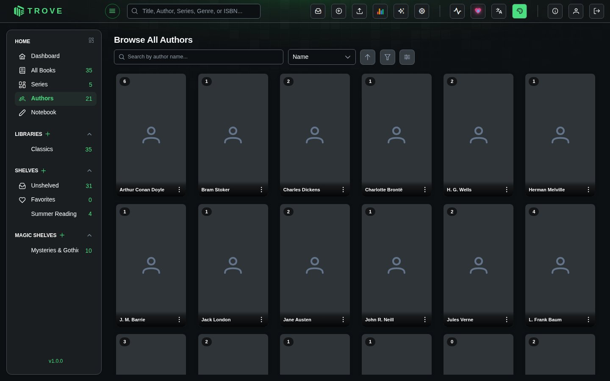
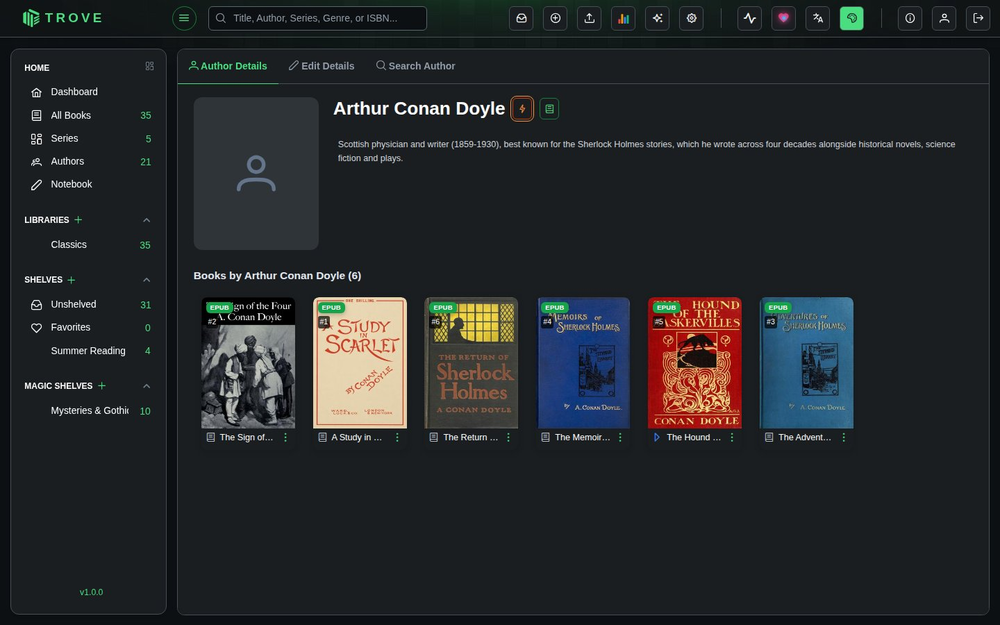
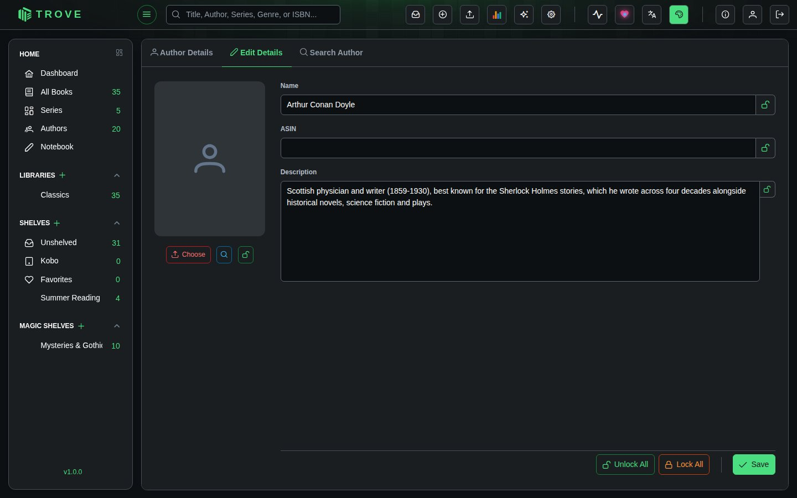
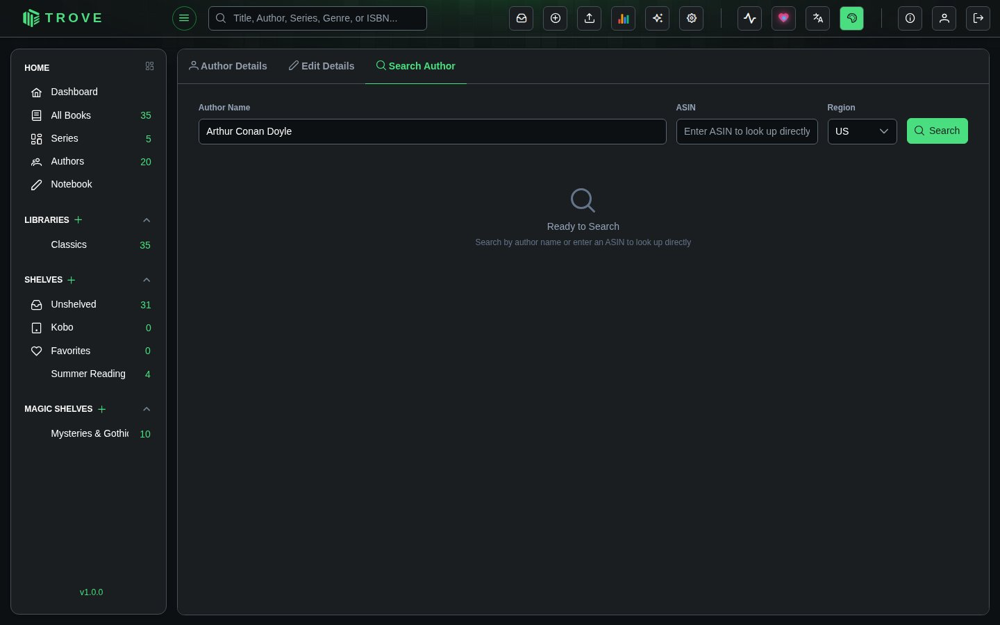

Authors
Trove automatically builds an author catalog from your book metadata. Click Authors in the sidebar to explore your collection organized by who wrote it.
Browsing Authors
The author browser displays a card grid of every author in your library.

Search and Sort
Type in the search bar to filter authors by name. The sort dropdown offers several options:
| Sort Option | Description |
|---|---|
| Name | Alphabetical order (default) |
| Book Count | Authors with the most books first |
| Matched | Authors with an ASIN (matched to Amazon) first |
| Recently Added | Authors whose books were added most recently |
| Recently Read | Authors whose books you read most recently |
| Reading Progress | Percentage of an author's books you've read |
| Avg Rating | Your average personal rating across an author's books |
| Photo | Authors with a photo first |
| Series Count | Authors with the most unique series first |
Click the arrow icon next to the sort dropdown to toggle between ascending and descending order.
Filters
Click the filter icon to narrow down the grid. You can combine filters across multiple categories:
| Filter | Options |
|---|---|
| Match Status | All, Matched, Unmatched |
| Photo Status | All, Has Photo, No Photo |
| Read Status | All, All Read, Some Read, In Progress, Unread |
| Book Count | All, 0, 1, 2, 3, 4, 5, 6-10, 11-20, 21-35, 36+ |
| Library | Dynamically built from your libraries |
| Genre | Dynamically built from the categories on your books |
A badge on the filter icon shows how many filters are currently active.
Display Controls
Use the card size slider to scale cards from 0.7x to 1.3x. Your preference is saved automatically.
Author Cards
Hover over a card and click the three-dot menu for quick actions:
| Action | Description |
|---|---|
| View Author | Open the author detail page |
| Edit Author | Jump straight to the Edit Details tab |
| Quick Match | Automatically match the author against metadata providers (picks the first result) |
| Delete Author | Remove the author after a confirmation prompt |
Author Detail Page
Click any author card to open their detail page. There are up to three tabs depending on your permissions.
Author Details
The landing tab shows the author's biography, with links to their Amazon and Audible pages (via their ASIN). Long biographies are collapsed by default and can be expanded. Below the bio, all of the author's books in your library are listed.

The book button beside the author's name fetches details from the web, trying Open Library and Goodreads. When the author's books in your library have Goodreads IDs, those are used to find the right person, which avoids mix-ups between authors with the same name. A GoodReads tag links to the author's Goodreads page once they're matched.
Edit Details
Update the author's name, ASIN, biography, and photo. Each field has its own lock toggle so you can protect specific edits from being overwritten during metadata refreshes.

Photo options:
- Upload a file from your device (PNG or JPEG, max 5 MB)
- Search to find a photo online (uses DuckDuckGo image search, shows resolution for each result)
- URL to link directly to an image
Use Lock All / Unlock All to toggle all field locks at once, or lock them individually.
Search Author
Look up author information from online metadata providers. Enter the author's name, select a region, and click Search.

Available regions: US, UK, AU, CA, IN, FR, DE, IT, ES, JP.
Each result shows the author's name, ASIN, and biography preview. Click the Match button on a result to pull its data into your local author record. Matching respects field locks, so any locked fields will be left untouched.
Bulk Actions
Select multiple authors using the checkboxes on their cards. You can hold Shift and click to select a range, or use Select All / Deselect All in the footer.
When authors are selected, a footer action bar appears with two options:
| Action | Description |
|---|---|
| Auto Match | Runs a quick match on all selected authors in sequence, streaming results in real time |
| Delete | Deletes all selected authors after confirmation |